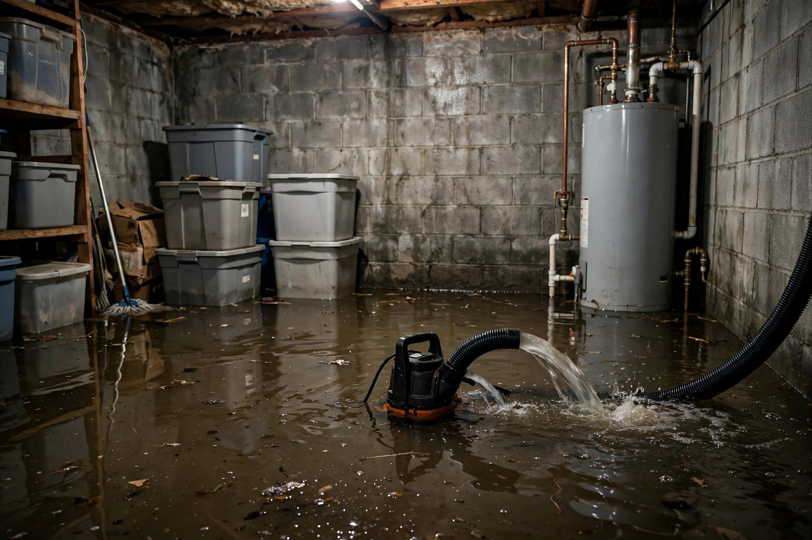

Home / Water Damage / Basement
Meridian, Idaho · Flood recovery below gradeA flooded basement needs a system, not a mop
Basement floods are the worst kind of water damage: the water has nowhere to drain, everything stored down there sits in it, and the walls wick it upward for days. Cleanup means pump-out, full structural drying, and honest calls on what survives.

The cleanup sequence
Make it safe
Power to the basement gets cut before anyone wades in. Gas appliances get checked. Floodwater of unknown origin is treated as contaminated — boots and gloves, no exceptions.
Pump and extract
Submersible pumps handle deep water; truck-mounted extractors pull the rest from floors and carpet. In Meridian's daylight basements, we also check the walkout door track where water loves to pool.
Sort and salvage
Everything comes up off the floor. Hard goods get cleaned; porous materials that sat in water — carpet pad, cardboard, upholstered furniture — usually can't be saved. You make the final call on keepsakes.
Open the walls
Flood cuts remove saturated lower drywall so the cavity can dry. Insulation that wicked water comes out. This is the step most DIY efforts skip — and the reason mold shows up two months later.
Dry to the meter
Air movers and dehumidifiers run until wood framing and remaining drywall hit documented dry standards. Daily readings, not guesswork.
Basement flood questions, answered directly
Can I pump it out myself with a rented pump?
You can move the bulk water, but extraction is the easy part. The hard part — opening walls, drying cavities, verifying with meters — is where DIY floods turn into mold jobs two months later.
How long before I can use the basement again?
Active work runs three to seven days depending on depth and materials, plus drying time. Rushing back onto damp framing invites exactly the problems you're trying to avoid.
Does floodwater ruin concrete?
No. Concrete handles submersion fine. What suffers is everything attached to it — drywall, insulation, flooring, and stored belongings.
Should I file an insurance claim?
Document everything with photos and readings first. Standard homeowner policies often exclude groundwater flooding but cover sudden plumbing failures — the water's source decides. Check your policy before assuming.
What if the water came from a sewer backup?
That's a different category entirely — contaminated water requiring disinfection protocols, not just drying. Tell us on the call so the crew arrives with the right equipment.
Sources: EPA — Mold, Moisture & Your Home CDC — Mold and Health
How deep, how long, how dirty
Three factors set the cleanup plan.
| Depth | What it means | First move |
|---|---|---|
| Under 2 inches | Surface flooding, walls may be spared | Extraction and rapid drying |
| 2–6 inches | Drywall wicking begins, baseboards at risk | Extraction, flood cuts likely |
| Over 6 inches | Wall cavities saturated, contents submerged | Pump-out, demolition, full dry-out |
Depth is measured at the lowest point. The IICRC S500 standard guides professional water damage response — drying to verified standards, not to the eye.
A spring cloudburst and a window well
A fast-moving spring storm dropped an inch of rain in forty minutes on a Paramount lot with fresh grading. The basement window well filled faster than its drain could clear, and water poured through the window frame — three inches across the finished basement before anyone got home. The carpet and pad were total losses, the lower drywall came out in flood cuts, and the window well got a proper cover and drain check. The structure dried clean in five days.
After the water: what Meridian homeowners ask
Will it flood again?
Often preventable. Exterior grading, gutter extensions, and window-well covers solve most Meridian basement flooding — the water usually came from the surface, not from below.
Is the foundation damaged?
One flood rarely harms a poured foundation. Repeated saturation can deteriorate sealants and widen existing cracks — worth an inspection if flooding recurs.
What about the furnace?
HVAC equipment that sat in water needs professional assessment before restart. Electrical components and burners don't tolerate submersion.
How do I prevent mold?
Speed is everything. The EPA notes mold can start within 24–48 hours on wet materials (EPA — Mold, Moisture & Your Home). Fast extraction plus complete drying is the entire prevention strategy.
Basement underwater? Call now.
Pump-out starts with one call. We'll guide you on power and safety while help is on the way.